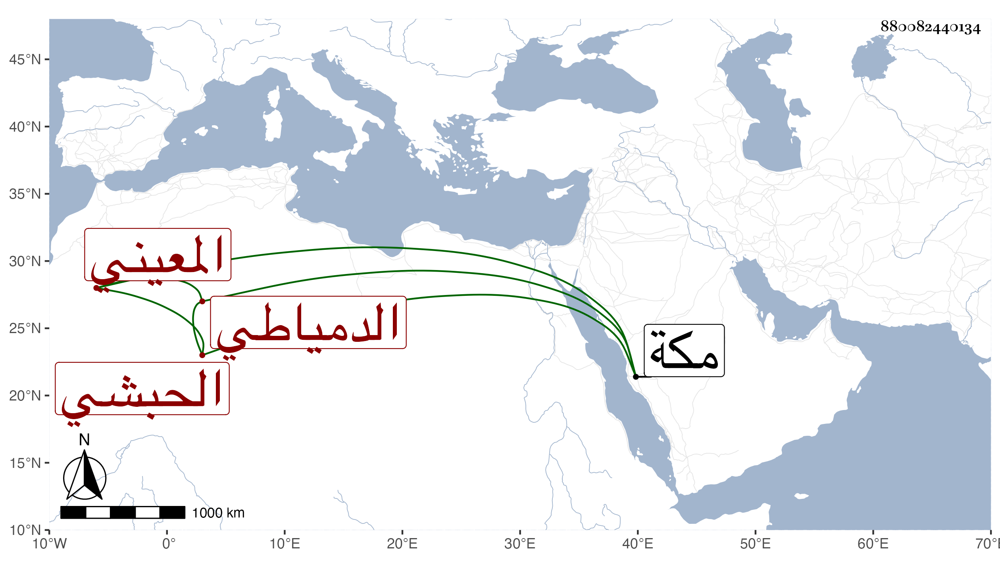

0902Sakhawi.DawLamic.ITO20230111-ara1.EIS1600.880082440134
Biography ID: 880082440134
330
جوهر المعيني الحبشي نسبة لمعين الدين الدمياطي الابرص . كان له أخ من جملة مماليك بردبك الاشرفي اينال فالتمس من سيده أخذه من معين الدين ففعل فبادر لارساله إليه فأقام في خدمته وصار لخوند الكبرى أم خوند زوجة أستاذه إليه بعض الميل فقدر سفرهما إلى الحج فاستصحبته الكبرى معها فلما وصلت إلى مكة أشارت ابنتها باقامته هناك فأقام مدة وضعف بحيث أشرف على الموت وتوسل حتى أذنوا له في الرجوع فرجع وصار يتردد إلى الكمال امام الكاملية ويقرأ عليه أحيانا فاختص بصحبته ولزم خدمة خوند الكبرى وابن أخيها العلاء بن خاص بك وابنته وأحبوه بالنسبة لابنة أستاذه فلما آل الأمر إلى الأشرف قايتباي وصارت ابنة العلاء زوجته هي خوند كان هذا من جملة خدامها وعمل ساقيا وذكر بديانة ومحبة في العلماء ولزم من ذلك مساعدته لبني شيخه الكمال في أخذ وظيفتي مشيخة الحديث بدار الحديث الكاملية التي صارت إلي بعد أبيهم بطريق شرعي متوهما أن ذلك فرية سيما ولم يعدم مخاصما ممن يتشبه بالفقهاء ونحوهم يحثهم على ذلك ومع ذلك فلم ينجر السلطان معهم ومللت فسكنت فبذل هذا حينئذ مالا حتى اتصل كتاب الوقف بشاهدي زور لكون فيه أن للناظر العزل بجنحة وغيرها مما مع ارتكابهم فيه لما أشرت إليه لا يقتضي إخراج المتأهل وتقرير غيره وآل الأمر إلى أن صارت لعبد القادر بن النقيب بنزول مما ساعده المشار إليه بقدر يسير كان يمكن هذا لو كان توجهه صحيحا دفعه وابقاء الوظيفة مع من هو منفرد باستحقاقها ولكن شأن هذا غالبا عدم الاهتداء للاصلاح بحيث لم يصلح بين ولدي شيخه ولا بين ولدي النور الفاكهي ونحو ذلك وربما يتعلق بأمر يتوهمه تدينا ، وما أحسن قول القائل : من عبد الله بجهل كان ما يفسد أكثر مما يصلح . وقد حج في خدمة خوند وابتنى مدرسة بغيط العدة بالقرب من نواحي جامع أمير حسين قرر بها مدرسا وقارئا للبخاري ونحو ذلك وصار إلى ضخامة ووجاهة ، وانتمى إليه غير واحد من الطلبة ونالوا بسببه بعض الجهات وعلى كل حال فهو أولى من خشقدم الزمام ومثقال الحبشة ونحوهما .
